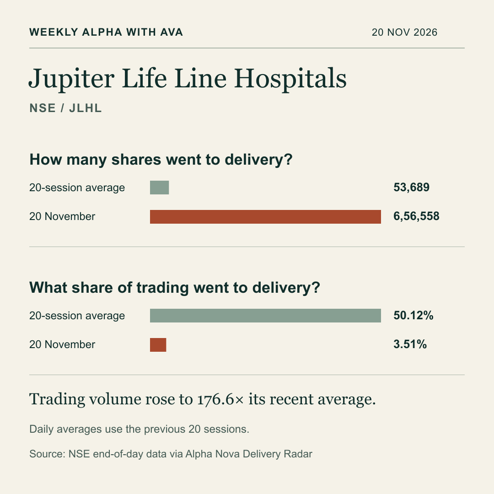
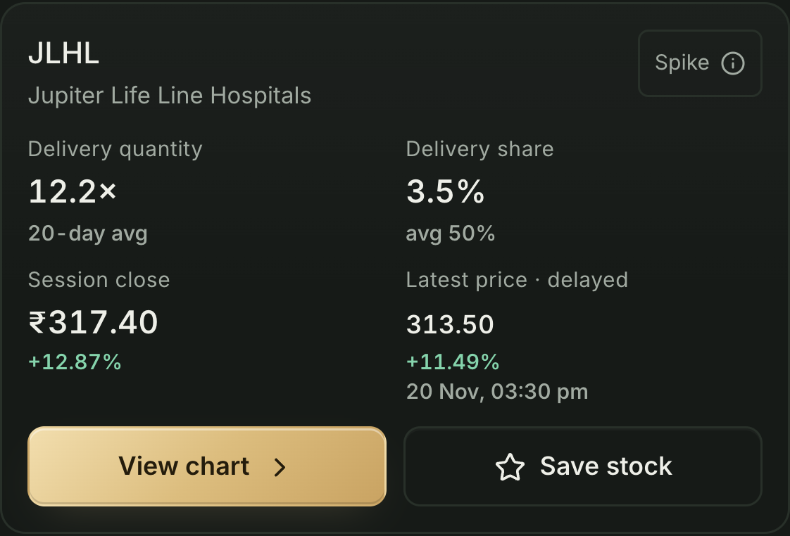

On Friday, 20 November, Jupiter Life Line Hospitals closed at ₹317.40, up 12.87%. Some 6.57 lakh shares went to delivery on the NSE. An ordinary session over the previous 20 averaged about 54,000. So why did delivery account for just 3.51% of Friday’s trading, when it usually accounted for about half?
The answer is in the other number on the screen. Trading volume reached 1.87 crore shares, or 176.6 times its 20-session average. Delivered quantity reached 12.2 times its own average. Both counts rose, but trading volume rose much faster. That drove the delivery percentage down.

JLHL on 20 November 2026 compared with its preceding 20 sessions. The lower chart compares daily delivery percentages.
How I’d read the next spike
When a stock appears on Alpha Nova’s Delivery Radar, I start with the delivered quantity. That tells me whether more shares than usual went to settlement. Then I check the delivery percentage. That tells me how much of the day’s trading those shares represented.
Friday’s JLHL figures show why I want both. Reading only the 3.51% figure, I’d miss just how many shares went to delivery. Reading only the 12.2× figure, I’d miss how much busier the rest of the market in that stock was. Who traded, and why, are still open questions.

Alpha Nova’s mobile radar card for Friday’s session. The card rounds delivery share to one decimal place.
For the next session, my question is whether JLHL’s delivered quantity stays elevated as trading volume settles. You can try the same check on a stock you follow. Open the radar and read the delivery quantity and delivery share side by side. Check the session date above the results before comparing figures.
Check a stock in Alpha Nova’s Delivery Radar →